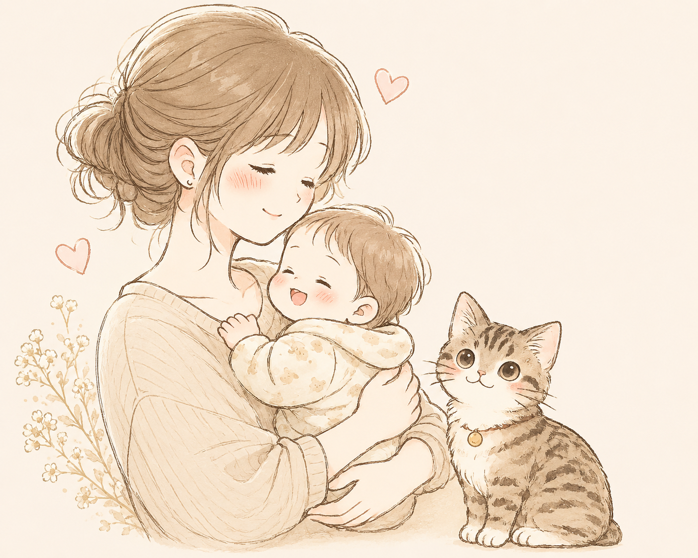
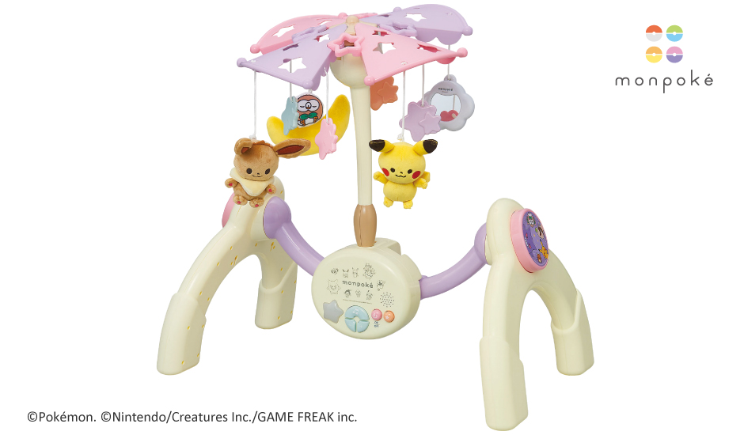
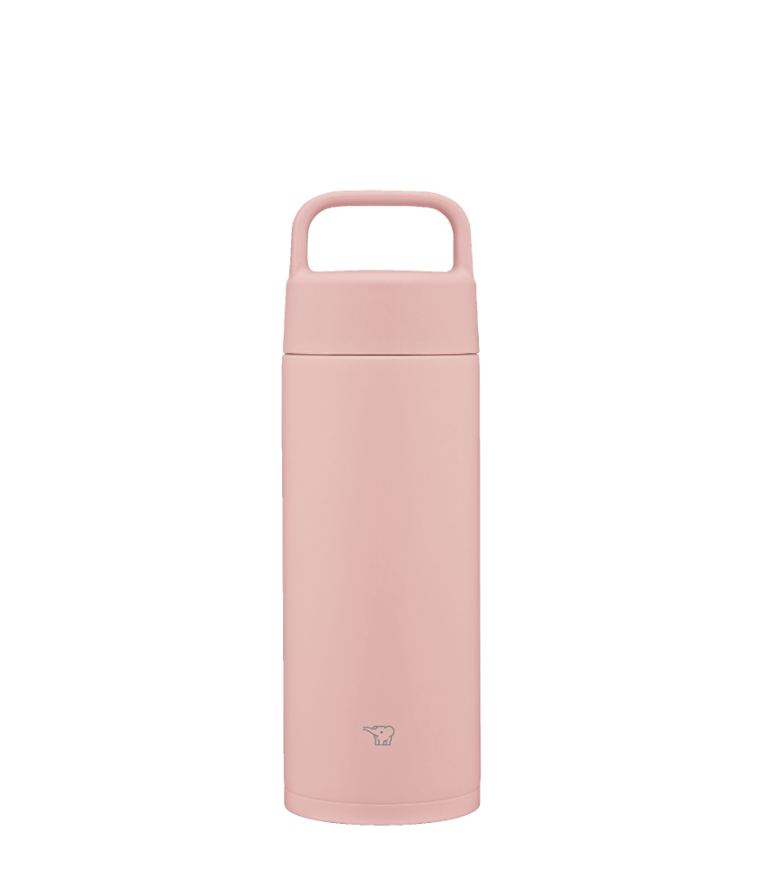
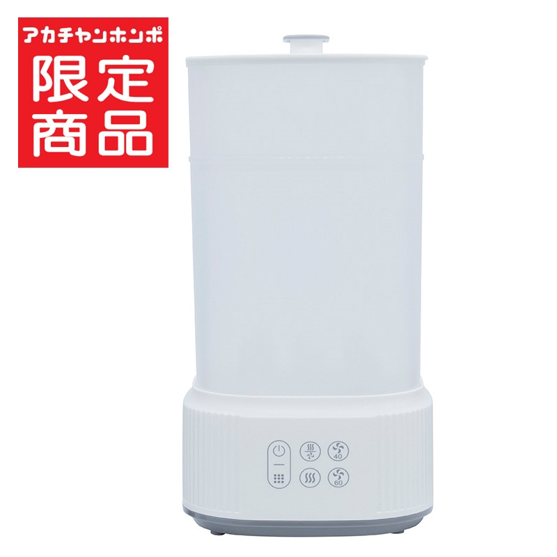
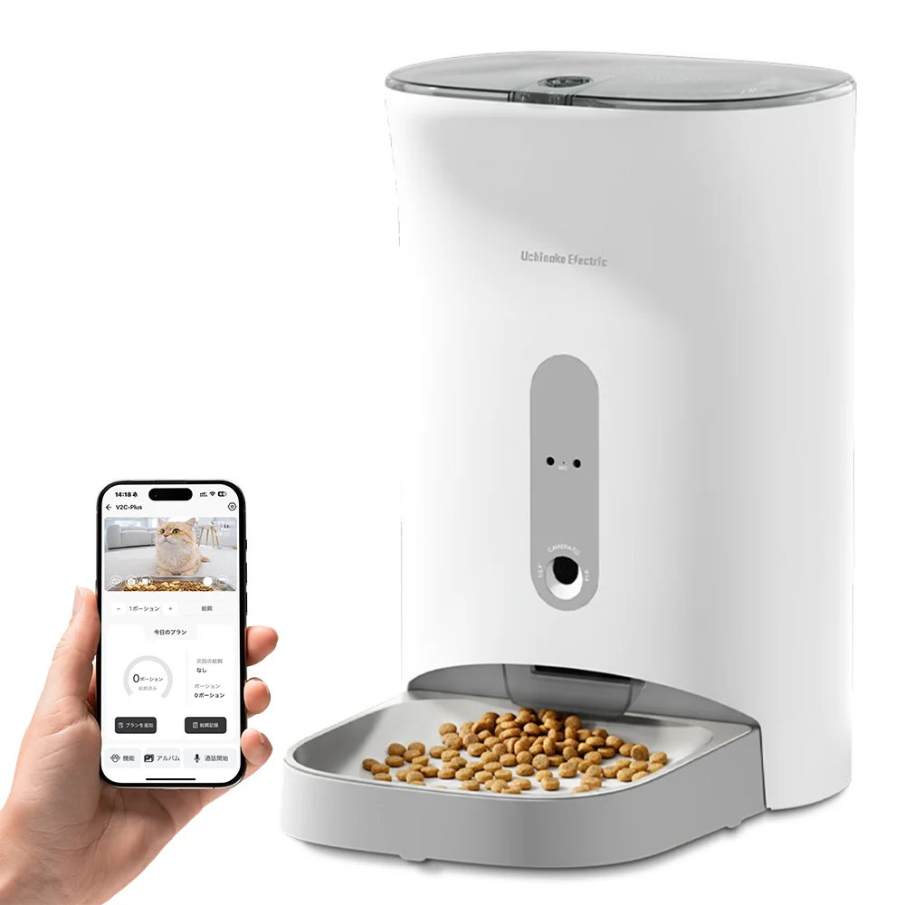
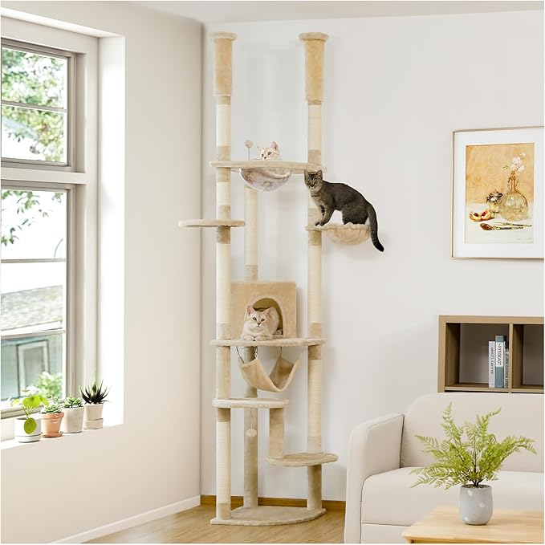
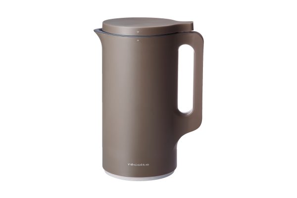
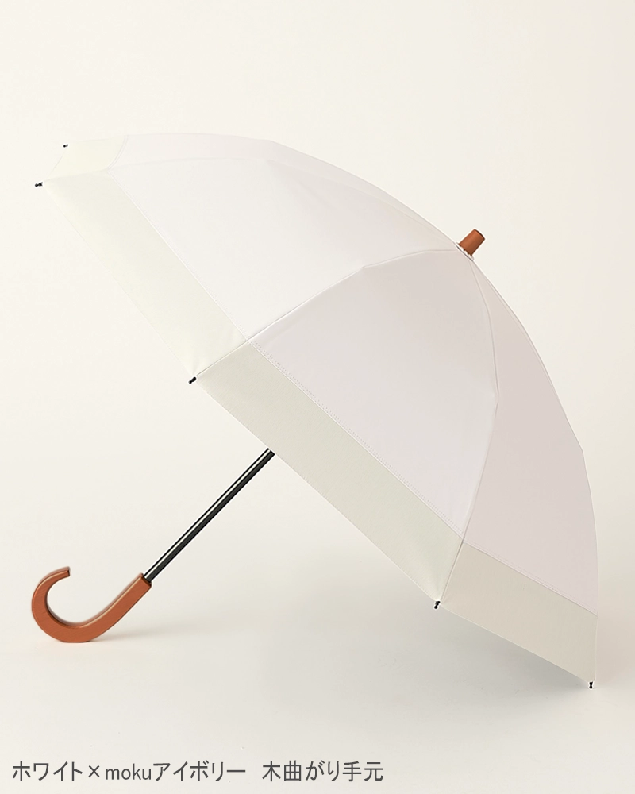

〜良かったものをゆるっとご紹介☺️〜


追視ができるようになってから大活躍！我が家ではベットメリーにして使ってました
動かしておけば一人遊びはもちろん、そのまま寝てくれることも😍
セルフねんねの練習になって、本当に買って助かった神アイテム✨

ベビー用品専用とかではなく普通のタンブラーです笑
象印のタンブラーは沸かしたお湯を入れておけば8時間は70度以上をキープするので枕元に置いて夜間の調乳に大活躍
母乳増やすためには白湯をたくさん飲むと良いらしく、自分用の飲料としても家の中で常に携帯してました

哺乳瓶の消毒はもちろん おしゃぶりやおもちゃも消毒できちゃう！
スイッチひとつでOKだし、お手入れも簡単なので重宝しました✨
今でも離乳食の食器を気になった時に除菌したりで使用してます

時間指定で自動でご飯あげるのはもちろん、遠隔からも給餌可能！
何よりカメラ機能がついてるのが大正解
別にペットカメラを置かなくても外出中の我が子の様子も見れちゃいます😍

やっぱタワーっていいよね♪
ハンモックもクリアボールもついてる超多機能タワー
突っ張り棒なのでガッチリ固定できて安心安全！
うちの子は上のハンモックがお気に入り

SNSで話題になってて便乗して購入😆
コーン缶と牛乳だけでハイグレードなスープができて美味しいし栄養満点で最高！
離乳食にも使えるので子育てママにはいいとこ取り♪ もはや最近は離乳食でしか使ってない笑

紫外線対策しないと暑いしシミが気になる！これがあれば体感温度がかなり涼しい
難点はベビーカー押しながらだと、私の筋力では難しいこと・・・
なので抱っこ紐の時だけ愛用してます🎵 アームカバーも検討中